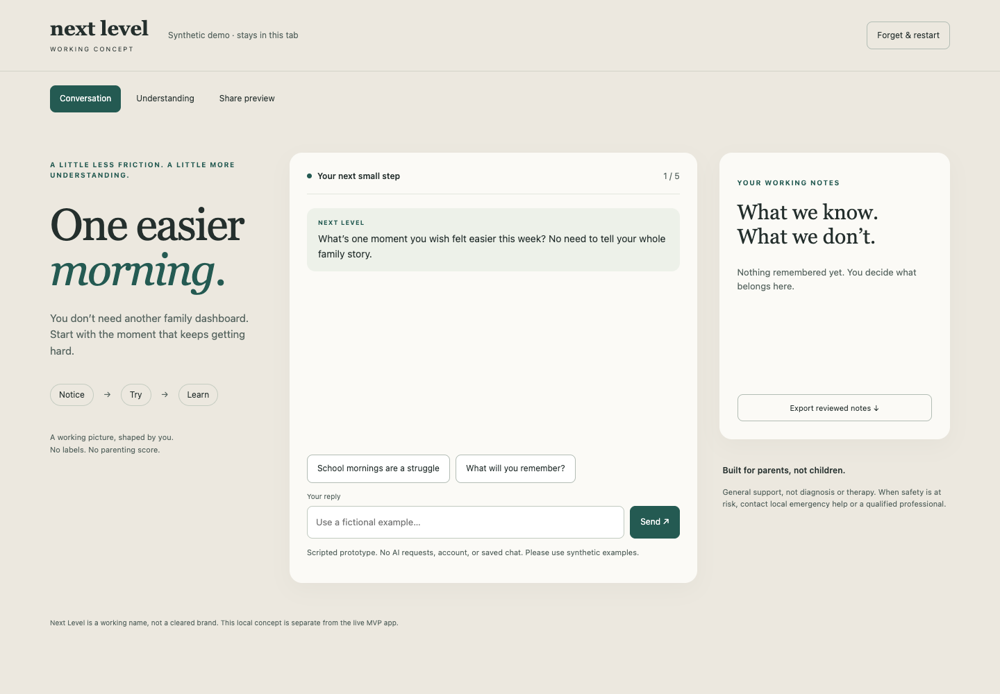
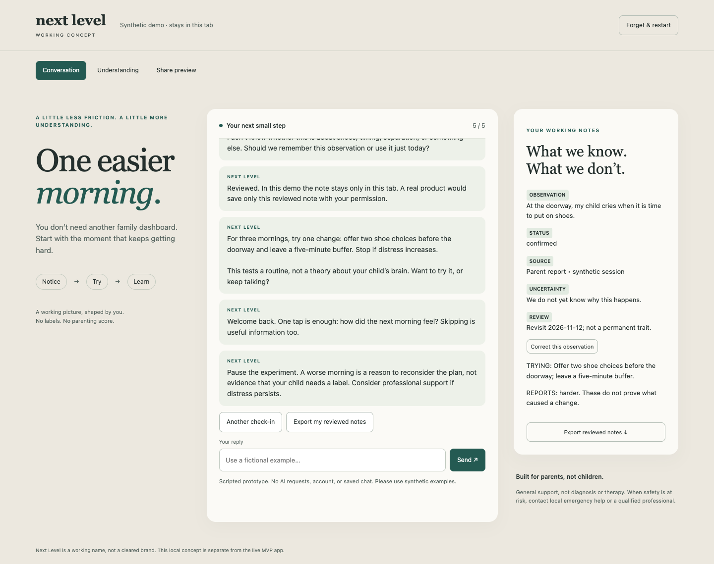
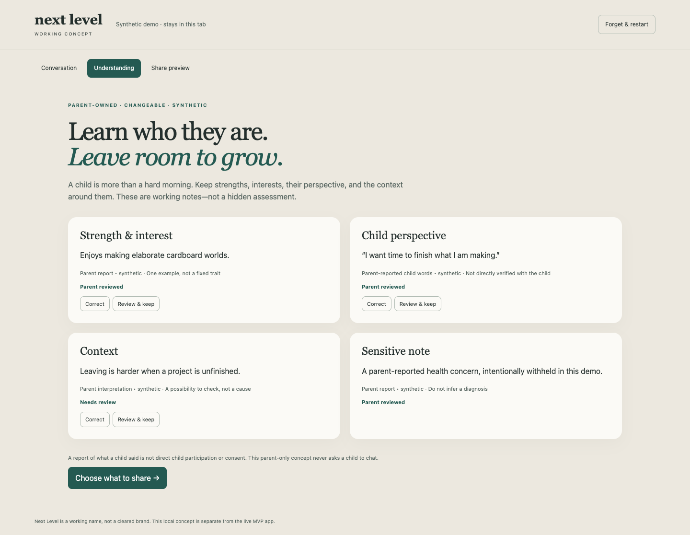
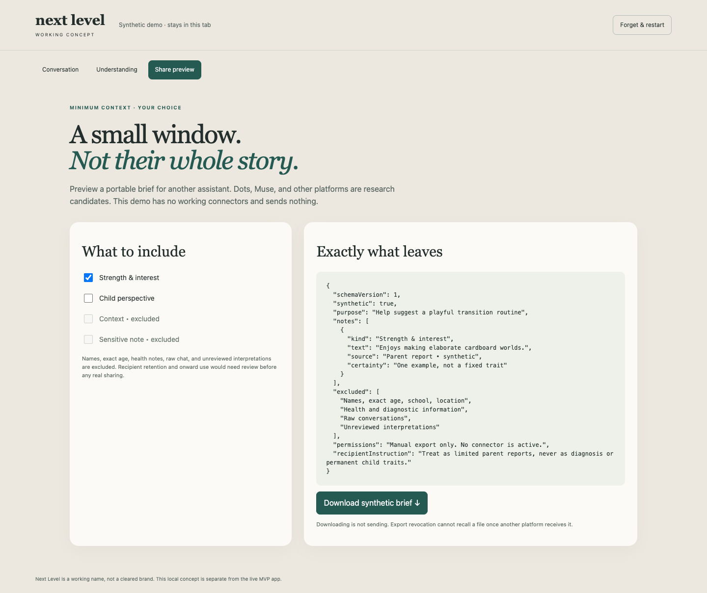
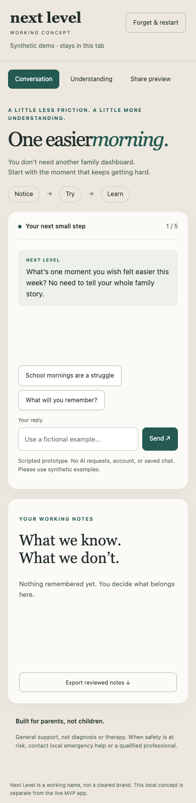
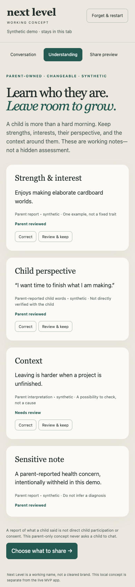
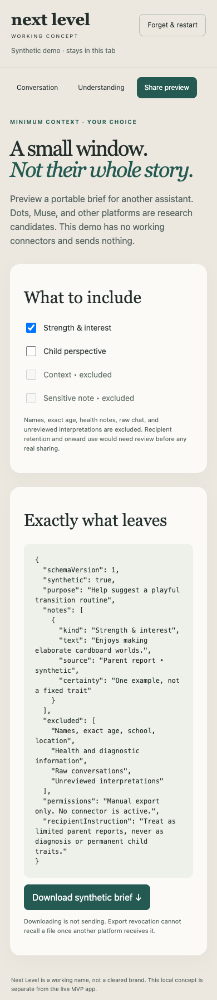
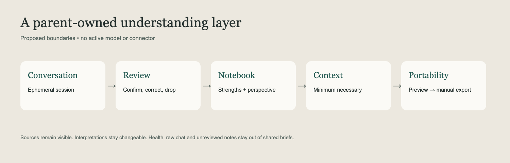

A capable assistant with the same history.
A parent-led, portable understanding companion. A smaller experiment, not a broad relaunch.
Begin with a short parent-reviewed brief, a tiny editor and an exact export preview. Conversation helps create and correct the record. A standalone coach must earn its place.
A capable assistant with the same history.
A few facts and open questions the parent approves.
Source-linked moments, context and counterexamples.
If the simple summary performs equally well, skip the inference graph. If an existing assistant is good enough, win on effort and reliability—or stop.
Help parents notice specific strengths, interests and perspectives; remember what matters; and choose a fitting shared moment. The child remains more than the record.
Working title only. Independent reuse of former partnership code, content, branding and design needs rights review. Research informs a proposal; it does not establish demand, clinical benefit, compliance or deployed functionality.
A short conversation about a positive or difficult moment. Ask a useful question; return attention to the child.
A reviewed brief that improves another assistant. Start with manual export; no connector dependency.
A parent and child explore an interest together. Parent records attributed perspective afterward.
Start with the fieldbook, using curiosity-led capture. Research authors differ on which surface should lead; test both rather than building three products. Professional-conversation briefs are an optional output, not a clinical product.

Prototype opening is a school-morning scenario. The Understanding view broadens the concept to strengths and perspective; it does not yet implement an adaptive positive-moment conversation.
| Comparator | Advertised overlap / offer | Implication |
|---|---|---|
| Hatley | MCP family memory, moments, outcomes; free Memory; $19/month Intelligence. | Closest portable-context comparator. |
| indi | Child records and developmental summaries; website $8.99/month, currency unclear; store offers differ. | Clinical/care-coordination overlap. |
| Nurturli | Sourced answers, 10-day trials and adjustment; $9.99/month; launch-status copy inconsistent. | The action/reflection loop is occupied. |
| Good Inside | GiGi plus trusted method/community; $84/quarter or $279/year. | Expert brand is an established advantage. |
| ParentData | Content-grounded Petey; $8 or $12/month tiers. | Citation-backed advice is not unique. |
| General assistants | ChatGPT projects/memory; dots continuing work; Muse goals/memory; Grok Bot persistent computer. | Benchmark competent configured alternatives. |
Give the comparator the same approved facts. Grade usefulness separately from warmth, brand and writing polish. Do not compare against an intentionally stateless or weak prompt.
Sources: Hatley, indi, Nurturli, Good Inside, ParentData, ChatGPT memory.
13 October research snapshot. Features, testimonials and prices are vendor claims/offers, not hands-on quality, subscriber counts, retention or willingness-to-pay evidence. Region, currency, tax and eligibility vary.
| Observed in local base 5e5caca | Needed for a new product |
|---|---|
| Silent extraction; prompt says not to mention tracking. | Visible candidate observations; accept, edit, reject. |
| Mutable name-keyed profile; no per-claim source, revision or expiry. | Stable child/note IDs, provenance, context, supersession and tombstones. |
| Empty-list agent updates do not clear old facts; rename leaves old key. | Explicit clear/forget and atomic revision-aware commands. |
| Text, voice, checkpoints and snapshots retain transcripts. | Separate approved notes from raw history; an explicit bounded lifecycle. |

Source: agent.py:272–290; profiling.py:6,99–164,188,204; server.py:1677–1700; parent_convai_endpoint.py:217,233. Five isolated assertions reproduce profile behavior; no runtime exploit or production configuration was tested.
Responsive relationships, reflective parenting and evaluated structured interventions support a thoughtful activity design. Preserve source and context when adults disagree.
Harvard responsive interaction
WHO parenting guideline
Multi-informant evidence
A population finding, cited answer or parent's confirmation does not validate an individual trait, diagnosis or neural state. Evidence for a structured program is not evidence for an autonomous chatbot adaptation.
Separate parent observations, parent-reported child words, caregiver interpretations, tentative hypotheses, activities/outcomes and parent constraints. Professional information is a later, separately authorized category.
Each record needs source, child identity, event/report times, context, review state, counterevidence, version, purpose/access scope and expiry. Prefer “reported twice at home; school unknown” over an uncalibrated confidence percentage.
The proposed app has no validated neuroscience assessment. A parent's confirmation establishes faithful representation of their account—not independent psychological truth. Sources and adaptations need professional review and rights clearance.

Invite exceptions and “still true?” Keep conflicting accounts attributed. Silence means missing data, not improvement.
Parents control the record; the child's agency and future privacy still matter. Do not build a dossier or a score.
Editing a note removes share approval until review. This demo has fixed IDs/dates and no persistent storage. It proves a visible interaction, not inference accuracy or longitudinal value.

Begin with manual selected-note export. Name the destination and purpose; show exact text; keep observation and inference distinct; exclude raw chat, health and family-conflict material.
OpenAI plugins/MCP, Meta custom connectors and Grok Bot MCP offer documented integration routes. None grants arbitrary access to consumer-agent memory or guarantees connector approval. OpenAI plugin guidelines constrain PHI and digital subscription sales; Muse constrains sensitive secondary inference.
The prototype filters sensitive/unreviewed record flags, not arbitrary sensitive free text. A real minimizer requires adversarial tests. Disconnecting or deleting here cannot reliably recall downstream copies. OpenAI policies · Muse policies · Grok Bot
Official SIWC documents identity sign-in and eligible plan-powered Responses requests. A paid/provider-hosted app needs selected-partner trial access; approval for Parent has not been established.
| Route | Actual boundary |
|---|---|
| ChatGPT identity | Verified account identity; no chat/memory import or general API entitlement. |
| Plan-powered Responses | Explicit usage scopes; eligible account/model; existing allowance, not fresh unlimited credits. |
| OSS local / self-hosted | Documented user-run route; not a bypass for commercial multi-user SaaS. |
| Ordinary API / BYOK | Separate Platform billing. Never ask for ChatGPT session tokens. |
| Plugin/MCP | Host calls Parent tools; not automatically inference funding for an independent app. |
Streaming and store:false; client-supplied context. No persistent server-side conversations, native audio/transcription, hosted file search/MCP or image generation on this route. Token refresh and process lifecycle need explicit handling.
Use a provider adapter with clearly disclosed funding and per-family caps. API fallback is conditional on suitable data controls and terms. Do not silently switch payer or claim plan login establishes zero retention.
Sources: SIWC quickstart · commercial access · preview contract · usage and permissions.
A child experience is a distinct permission boundary, not necessarily a second installation. Measure what changes away from the screen.
| Mode | Recommendation / required boundary |
|---|---|
| Parent + child together | First participation test; clear attribution, skip/stop, no private adult context. |
| Offline activity | No device prerequisite; parent-reported reflection remains attributed. |
| Parent-phone child turn | Later restricted credential; adult reauthentication to return/relaunch. |
| Tablet/browser | Later single-use pairing; no parent bearer token, sibling isolation. |
| Separate child app | Only observed independent demand and access benefit justify it. |
Common Sense: ages 5–8, 58% own a tablet, 13% a cellphone (2024 data, 2025 report). Pew: smartphones owned by 12% of ages 5–7, 29% of 8–10 and 57% of 11–12 (2025 survey). Definitions and age bands differ; possession does not establish compatible, permitted access.
Common Sense census · Pew study. Proposed first discovery cohort: 5–8, one language/jurisdiction; this is a practical hypothesis, not an efficacy boundary.
Current handoff is insufficient: traced parent return without reauth; sibling history before PIN; disconnected iOS PIN; new config IDs can separate current companion from old crisis lock. Static audit only; no device attack performed.



Help before a long intake. Save only what is reviewed. Make correction and forgetting easy. No streaks, compliance score or guilt for missed sessions. A shared activity may be more useful than more chat.
Three synthetic responsive views, captured at 390px width. No adaptive model, account, encrypted storage, scheduled reminder or connector. This is a concept demonstration, not deployed product functionality.

Durable execution/cancellation patterns; atomic command receipts; short parent conversation; visible reviewed notes; a small professionally reviewed content set; export/delete controls.
Planner, camps, Gmail/calendar, Circle, admin CMS surface, generic feed, fake paywall, child voice, native media and three-platform connectors. Preserve working beta code/deployment.
Rights review; allowed claims; jurisdiction/age classification; stable IDs and tenant/role authorization; encryption; redacted logs; consent/versioning; prompt-injection tests; confirmed correction/deletion across caches, checkpoints and backups.
OpenAI under-18 guidance calls for API ZDR before under-13 personal data (and below applicable consent age). Verify actual scope, approval and endpoint eligibility. Parent-entered information is not automatically exempt. Neither store:false nor SIWC proves ZDR.
Provider guidance · COPPA · Apple. Legal/platform research is issue-spotting, not clearance. Newly enacted California duties need operative-date and applicability review.
| Stage | Test / decision |
|---|---|
| 1 · Problem | 12–15 adult interviews with synthetic concepts. Concrete need, trust and device reality; no leading neuroscience pitch. |
| 2 · Synthetic quality | At least 30 varied benchmark cases; expand to 100 multi-session histories. Expert review of extraction, contradictions, sibling identity and forgetting. |
| 3 · Ablation | Same model/content/history: generic memory vs reviewed summary vs full profile. Blind order; separate warmth from supported usefulness. |
| 4 · Approved pilot | Only after rights, provider and privacy gates. Four weeks; voluntary use, useful learning and actual paid renewal—not chat volume. |
| 5 · Portability | Exact-fields/destination comprehension plus time/result advantage over copying a simple note. Add read-only connector only if worthwhile. |
Proposed business thresholds: roughly two-thirds blinded usefulness preference with incremental gain over a summary; no severe failures; at least half voluntarily use in three of four weeks and five renew a paid month in a 15–20-family discovery cohort. A 40–60-household comparative feasibility study is a later alternative—not a clinical efficacy trial. Predeclare one design; do not mix source proposals after seeing results.
Stop the profile thesis if generic memory ties, useful results require hidden inference, correction fails or worry increases. Episodic value may suit a bounded service or toolkit instead of subscription software.
Small Clues (warm; adjacent My Little Cues collision), Parentheld (portable stewardship), Tendstory (may sound like a storybook). “More to Them” is a possible brand line. Quick public searches are not trademark/domain clearance. Next Level remains the branch title.
Base 5e5caca; initial experiment commit 758c118. Four BB reports: code audit, UX, safety and handoff. Original master and live deployment preserved.
Passed: 9 model tests, 8 browser checks, JS syntax, 5 isolated profile assertions, source-link checks and print rendering checks.
Full backend/web/iOS gates, live-model quality, real-device restoration, OAuth, connectors, actual family demand, paid retention, clinical benefit and legal compliance.
Share filtering uses record flags; it does not redact sensitive free text. No real child data or model calls.
Research snapshot 13 October 2026, supplied by independent parent research workers and preserved as authored. This synthesis does not turn vendor claims into tested performance or primary study findings into app efficacy. Full reports preserve regional, pricing, legal and scope caveats. Local PDF links to repository files work best in the adjacent HTML; external citations remain clickable in print/PDF viewers that support links.